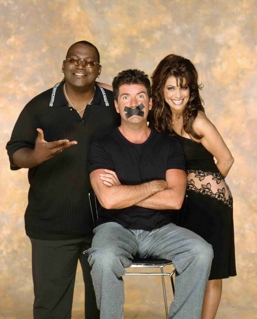
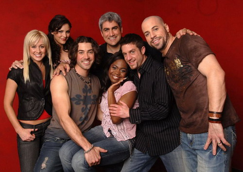
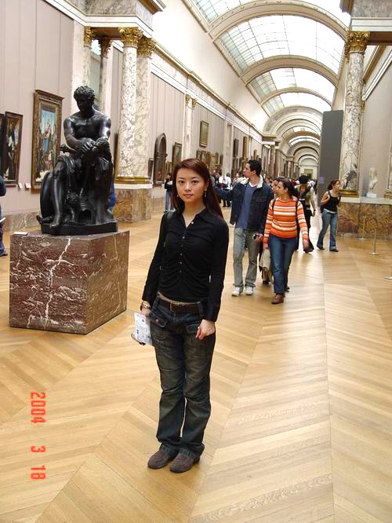
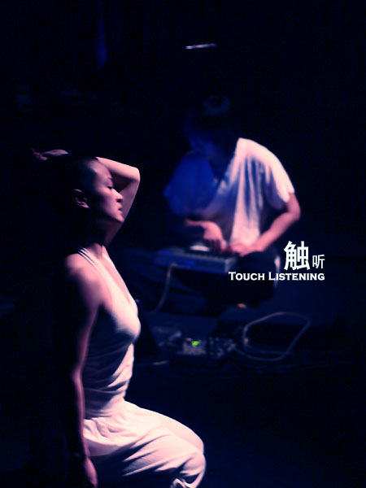

...... @ Jun 07, 2006
昨天开始高考了，考区门口的路都封了，得绕道行驶。
昨天开始高考了，考区门口的路都封了，得绕道行驶。
昨天开始国内无法登陆tecinese.com了，听说google也被阉割了，NND！最近公司领导还装了个木马程序，对登陆到域的电脑进行监控，说白了就是对职员的电脑进行监控。想到这个就让人气愤，一群鸟人！
周末看完朋友寄给我的三碟自己刻录的DVD《American Idol》，忽然感觉国内“超女”比赛简直就是一群大人带着小孩儿在搬家家玩，超女是不是抄袭美国偶像？互动性强是收视率高的原因？不过湖南卫视光是短信收入分成可能也有几百万了吧？！
“《American Idol》美国偶像”是福克斯公司在英国系列电视节目“流行偶像（Pop Idol）”的基础上经过改编推出的真人秀电视节目，开始于2002年。说没有门槛，其实还是有要求的，那就是参赛者必须是美国公民，年龄必须在16岁到24岁。到了今年，参赛年龄限制才被放宽到28岁。这个节目一直是福克斯公司的收视法宝，其冠军获得者的奖品就是一纸演唱合约。节目播出4年来，虽然舆论也是褒贬不一，但无疑受到了很高的关注。去年五音不全的孔庆翔极具喜剧感的表现被评委嘲笑并被当场淘汰，他却以一句“我已经尽力了，因此我不会有丝毫遗憾”一夜成名，不但赢得了美国观众的支持，还成功签约发行了第一张专辑，引发了世界各地关于偶像的讨论。
基本是一气呵成看完《American Idol》，特别喜欢Katharine、Chris Daughtry、Ace Young、Mandisa，后来Elliott Yamin的歌声打动了我，渐渐喜欢上他了。今年美国偶像得主Taylor Hicks，这个白色乱发男人从开始海选我就没注意过他，到了50强才发现这个人，吹着口琴，走路东摇西晃站不稳的样子。他获冠军真是出乎意料呢！不过倒是比较风趣的先生。
这次American Idol由FORD和可口可乐公司赞助，节目中插播广告里的演员皆为American Idol前10强参赛者，广告和American Idol和谐得流畅，并不令人讨厌！国内超女节目中间突然插播几段广告，那种感觉就象呼吸的时候突然打了个嗝！Taylor Hicks和Katharine分得冠军和亚军，FORD公司分别赠送给他们一辆Ford Mustang。蒙牛酸酸乳与其相比真是小巫见大巫。
在我喜欢的选手中26岁的已婚选手Chris Daughtry由于表演Fuel乐队的一首“Hemorrhage” 太出色，已经获得Fuel乐队亲自邀请，担任该乐队主唱！消息称，Fuel乐队贝司手Jeff Abercrombie在一次接受采访时表示，“Chris非常的棒！他的声音非常有感染力！当时他表演那首歌，简直就像是他自己为自己量身订造的一样。 ”
Fuel乐队的原主唱Brett Scallions今年二月上旬离开乐队，此后主唱一直空缺。目前Fuel乐队的官方网页上正在招募歌手，也提及了考虑“收下”Chris的决定，不过正式的声明并未发表，相信一方面是顾及到原主唱忠实歌迷的想法，另一方面是考虑到Chris在半年内仍将被“偶像”节目合约束缚，但不管如何，Chris的“音乐前程”看上去的确一片光明。
Chris Daughtry演唱的FUEL的《Hemorrhage》
Memories are just weighing me down
Treading waters til the depths give up their dead
What did you expect to find?
Was there somethin’you left behind?
Dont you remember anything I said when I said
Chorus:
Don’t fall away, and leave me to myself
Don’t fall away, and leave love bleedin’
In my hands, in my hands again
Leave love bleedin’
In my hands, in my hands
Love lies bleedin’
Oh hold me now I feel contagious
Am I the only place that you’ve left to go
She cries her life is like
Some movie in black and white
Dead actors fakin’ lines
Over and over and over again she cries
Repeat Chorus
And I wanted
You turned away
You don’t remember, but I do
You never even tried
Chris & Ace

我喜欢Chris的原因很简单，因为他太太好象比他年纪大很多，还带着两个孩子和他结婚的，欣赏他的勇气！
喜欢Ace则是因为他那卷卷的短长发，始终微红的面颊显得有些腼腆害羞。想不明白，大多数美国人的牙齿为什么都那么白呢？梦想国内也有很专业的牙齿美容机构提供美白牙齿的服务，让中国人也能拥有闪亮的笑容！
美国偶像从头至尾三个评委，其中属Simon Cowell最为尖酸刻薄，这位唱片业的决策者从未想过要当一位电视明星。当初答应为英国的一档选秀节目《流行偶像》(Pop Idol)担当评委，仅仅是为了针对获奖者保护公司的利益。即使今天，他仍然认为自己首先是个商人，不同的是这个商人仅靠批评歌手们唱得多恐怖、多烂、多么像垃圾就能愉快地赚到百万美金。他称之为Syco的公司的一部分，包括一个唱片公司和一个电视制作单位，两者都在以超群的速度制作产品。所谓“西蒙有限公司”规模惊人。考威尔对大量歌手、演唱组合的事业进行运作，包括爱尔兰演唱组合“西城男孩”和以歌剧风格演绎流行歌曲而在大西洋两岸登上排行榜的四人组Il Divo。他的公司每年卖出数以百万计的专辑并且今年将推出5个歌手及团体。考威尔还在英国创建了一档新的电视节目《X-Factor》。这档节目太成功了，甚至阻止了英国版的《流行偶像》节目的继续播出，他因此被控上法庭。另外，在英国和美国的电视网，还有不少于11个电视剧出自他的制作。
《美国偶像》节目三位裁判：Randy Simon Paula

American Idol前七强合影

想去买本丹·布朗写的《达·芬奇密码》的书。电影永远没有小说精彩，如果想象力更丰富和发散，阅读小说应该是个更好的选择。电影《达芬奇密码》上映一周多，票价仍然保持在45元，有关“达芬奇密码”的手机屏保、体恤衫、猜谜、PS2游戏等等节目几乎也是同时在市场上出现。
丹·布朗在小说里描述了一种带有黑色幽默的人生哲学，同时通过小说主人公之口对卢浮宫收藏的经典画作进行了别具一格的点评，对创作这些作品的画家也有非常有意思的介绍。
卢浮宫是一个非常巨大的文化艺术宝库，影片最后TOM HANKS站在倒玻璃金字塔上，耶稣的妻子抹大拉有名的圣女之一，她的石棺就在其下面，这个镜头勾起我对卢浮宫的亲切回忆，很巧的是我正好也拍了张卢浮宫入口倒玻璃金字塔的照片。电影中的让·雷诺针对卢浮宫前的玻璃建筑物说道：“这是巴黎脸上的一道疤痕！”


文字来源：http://www.playes.net/List.asp?UserID=1
这张同名专辑《Daniel Powter》在八月份发行，现在已有大量相关文章，可见大红程度。有称这张大碟《Dniel Powter》为 Coldplay、Elton John 和 James Blunt 的综合体，哈，是不是真是这样，倒要各位自己听过再下结论了。新专辑内的十首心情小品，均是他一手创作的。整张专辑的音乐是轻快活泼的，歌曲很吸引人，节奏具感染力、坚不可摧的和旋像钩子入你的脑袋里并且不放手。值得一提的是，Daniel Powter 驾驭自如的真假音切换，使每首歌曲跌宕起伏而不沦于单调，尤其是在描述谎言爱情的 Lie To Me中，更是得以淋漓尽致的发挥。
Daniel Powter 就是这样，你会觉得他像一位长久“在路上”的诗人，或者是与你在地铁站内擦肩而过的行者，你大可不必怜惜他在因何而忧伤不定，他是快乐的，就像一位感性和喜欢随遇而安的诗人在记录着所看到的一切，并怀着一种坚定而感恩的心，活着。
首支单曲“Bad Day”连续十周占据瑞士单曲榜冠军，如旋风般地在法国电台创下点播的奇迹，将近两个月蝉联榜首，更在法国当地造成一般DP（Daniel Powter)热潮。MV拍得非常有意思，描述一对相隔咫尺、却一直素不相识的男女，在各自生活里或喜或悲，并最终因为个性深处的契合而走近彼此的故事，特别是里面男女主角在同一广告板上涂鸦的情节显得非常真切动人……而它又不仅仅是一出“向左走，向右走”的爱情小品，歌曲背地里折射出来的现代人的生活观，则是可以使之意味悠长的原因所在。
如果爱情是谁的劫难，那我们永可不必相交。但若爱情是我们的转机，我们又可轻易让它溜走？
Where is the moment when we need it the most
You kick up the leaves and the magic is lost
You tell me your blue sky’s fade to gray
You tell me your passion’s gone away
And I don’t need no carryin’ on
我们最需要好运的时候它在哪里
你踢起地上的落叶 魔法消失了
你告诉我你蔚蓝的天空渐已灰暗
你告诉我你心中的热情也已冷淡
而我不必再去坚持
You stand in the line just to hit a new low
You’re faking a smile with the coffee to go
You tell me your life’s been way off line
You’re falling to pieces every time
And I don’t need no carryin’ on
站在情绪低谷的边缘
你强装微笑 品着咖啡
你告诉我你的生活已背离常轨
你每一次都会摔得粉碎
而我不必再去坚持
Because you had a bad day
You’re taking one down
You sing a sad song just to turn it around
You say you don’t know
You tell me don’t lie
You work at a smile and you go for a ride
You had a bad day
因为你这一天很糟糕
情绪才会低落
唱首悲伤的歌 很快就会雨过天晴
你说你茫然不知所措
你告诉我不要说谎
你挤出一个微笑然后去上班
你这一天很糟糕
The camera don’t lie
You’re coming back down and you really don’t mind
You had a bad day
You had a bad day
相机不会说谎
但你会恢复过来 你也不会真的在乎
你这一天很糟糕
你这一天很糟糕
Well you need a blue sky holiday
The point is they laugh at what you say
And I don’t need no carryin’ on
你需要一个阳光明媚的假日
可他们却嘲笑这种说法
而我不必再去坚持
You had a bad day
You’re taking one down
You sing a sad song just to turn it around
You say you don’t know
You tell me don’t lie
You work at a smile and you go for a ride
You had a bad day
The camera don’t lie
You’re coming back down and you really don’t mind
You had a bad day
(Oooh.. a holiday..)
你这一天很糟糕
情绪也很低落
唱首悲伤的歌 很快就会雨过天晴
你说你茫然不知所措
你告诉我别说谎
你挤出一个微笑然后去上班
你这一天很糟糕
相机不会说谎
但你会恢复过来 你也不会真的在乎
你这一天很糟糕
你这一天很糟糕
Sometimes the system goes on the blink
And the whole things it turns out wrong
You might not make it back and you know
That you could be well oh that strong
And I’m not wrong
(yeah…)
有时候系统也会失控
一切都变得很糟糕
你或许无法挽救但你知道
你会好好生活并依然坚强
哦 我说的没错
So where is the passion when you need it the most
Oh you and I
You kick up the leaves and the magic is lost
当你最需要激情的时候它在哪里
噢 你和我
你踢开地上的落叶 魔法消失了
Cause you had a bad day
You’re taking one down
You sing a sad song just to turn it around
You say you don’t know
You tell me don’t lie
You work at a smile and you go for a ride
You had a bad day
You’ve seen what you like
And how does it feel for one more time？
You had a bad day
You had a bad day
因为你这一天很糟糕
情绪才会低落
唱首悲伤的歌 很快就会雨过天晴
你说你茫然不知所措
你告诉我不要说谎
你挤出一个微笑然后去上班
你这一天很糟糕
你已经看到你想要的结局
再经历一次会是什么感觉？
你这一天很糟糕
你这一天很糟糕
这位现年27岁的年轻绅士，来自加拿大温哥华。听过Michael Bubl的柔情歌声，你是否感觉到这是一个新浪漫主义歌手？麦克布雷的首张专辑《Michael Buble . 温柔本色，是一张以听觉拭去类型音乐界线的精彩歌唱作品。Michael Buble还有一张专辑名字叫《Its time》，里面有一首非常抒情的歌曲叫“Home”, 是电影《Wedding date》的插曲。
Michael Buble – Home.MP3
Another summer day
Has come and gone away
In Paris or Rome
But I wanna go home
Mmmmmmmm
May be surrounded by
A million people I
Still feel all alone
Just wanna go home
Oh I miss you, you know
And I’ve been keeping all the letters that I wrote to you
Each one a line or two
“I’m fine baby, how are you?”
Well I would send them but I know that it’s just not enough
My words were cold and flat
And you deserve more than that
Another aeroplane
Another sunny place
I’m lucky I know
But I wanna go home
Mmmm, I gotta go home
Let me go home
I’m just too far from where you are
I wanna come home
And I feel just like I’m living someone else’s life
It’s like I just stepped outside
When everything was going right
And I know just why you could not come along with me
This was not your dream
But you always believed in me
Another winter day has come
And gone away
In even Paris and Rome
And I wanna go home
Let me go home
And I’m surrounded by
A million people I
Still feel alone
Let me go home
Oh, I miss you, you know
Let me go home
I’ve had my run
Baby, I’m done
I gotta go home
Let me go home
It’ll all be alright
I’ll be home tonight
I’m coming back home
利用间隙写几句。
看见这样的签名：“如果有一种爱叫作沉沦，那么就让我们一起深陷。”与过去有段时间我那个“如果还有哀伤，让风吹散它”有点类似的味道。爱情的基础是快乐，没有这个做基础再深陷的爱情也不会持久下去，除非你真的很喜欢自虐！沉沦意味着悲观，走投无路后的无奈。尤其存在于那样一个年轻女孩的心里，更让人着急和心疼！何必和自己过不去？爱情好似一缸水，你用一瓢就少一瓢，不要挥霍仅有的那些水。快乐没有套数可寻，不是这样吃饭那样咀嚼，这样笑那样凝望，这样发声那样说话就能令你快乐，快乐是那么自然，你并不明白和对方在一起为什么快乐，有着这种基础的爱情是健康和渐渐成熟坚固起来的感情维系！人生能有几个沉沦年？可以快乐的活，干吗要做对不起爸妈对不起自己的事儿呢？早点走出这种“沉沦”狗屁观点下的狗屁爱情吧，做个快乐的女人有什么不好？
Chou chou：你还听说周杰伦现在的绯闻对象是李宇春呀？
M：啊？#·%#*#....
Chou chou：然后双方的FANS就开始口水战了...
M：那周杰伦马上要请李宇春拍电影了？他常会用当红女星拍电影哦。
Chou chou：我说的是唱歌的周杰伦，不是周星驰！
M：啊哦！哈哈哈哈~~~
Chou chou：周杰伦说：“一说到这个我就要跳出来澄清，我喜欢的类型跟所有男生喜欢的类型无分别，大家不要把李宇春列入我绯闻女友内。这是出道以来最好笑的对象，她那么中性。”还叮咛在场记者，往后写新闻时，千万不要将李宇春列入他的绯闻一览表，这些话使李宇春和周杰伦的歌迷在网络上引发口水战，周杰伦更遭来李宇春歌迷的无数骂声。
想起有天我指着橱窗里的李宇春问身边一朋友：“你觉得她怎么样？”朋友答：“第一次看见就觉得她长得象姚明。”
由北京报章举办的“中国最美50人”评选，巩俐当选第一名，而‘超级女声’得奖者李宇春及刚夺得香港金像奖影后的周迅，则分别排名第二和第三章子怡则排名第4。可见审美眼光真是没有一定准则。
上海育音堂：虎子&小柯
